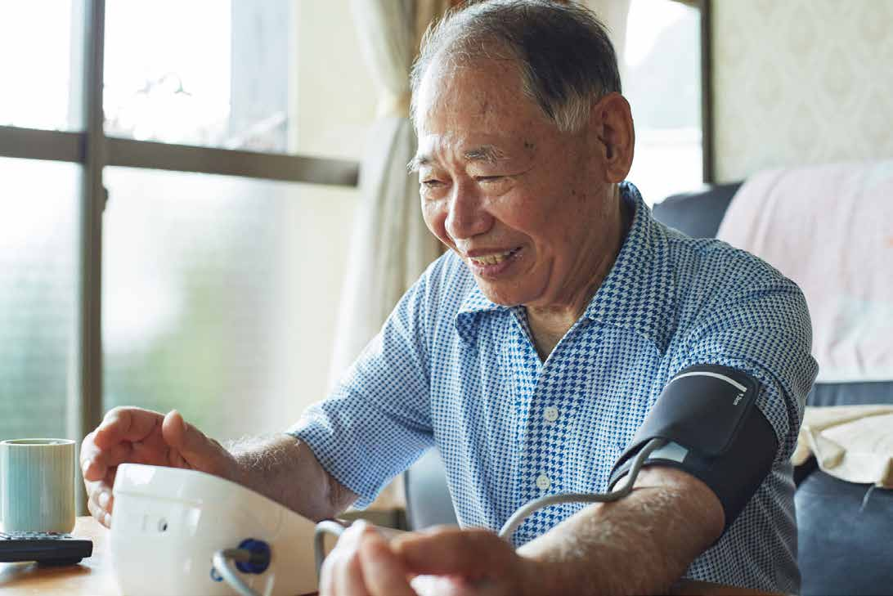
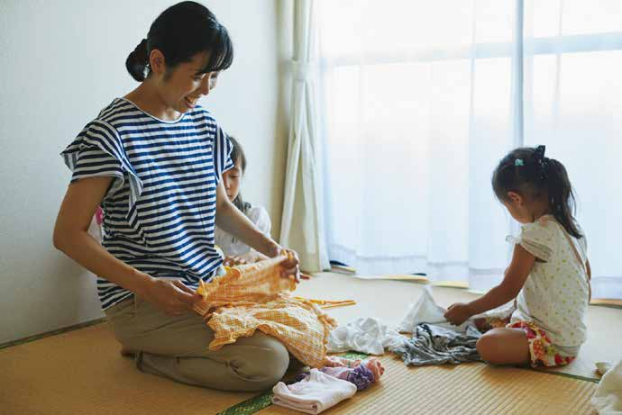
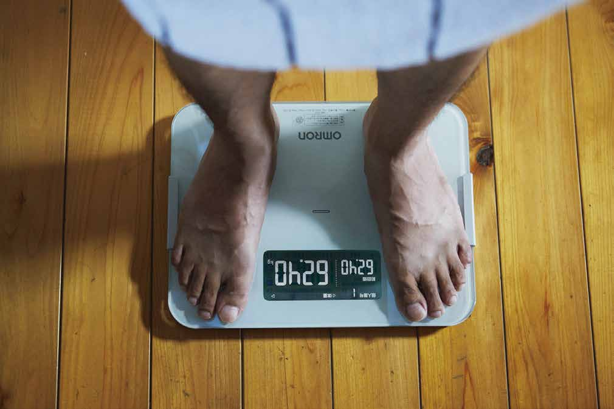
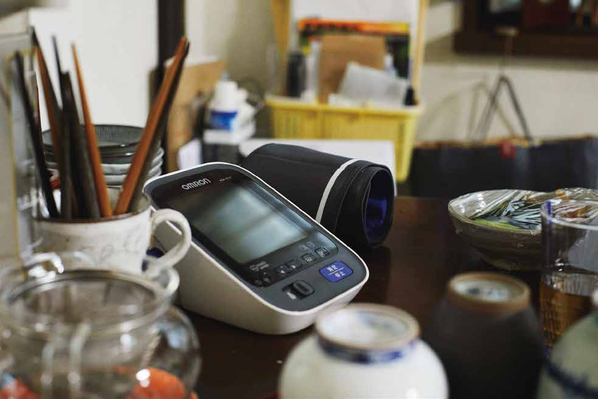
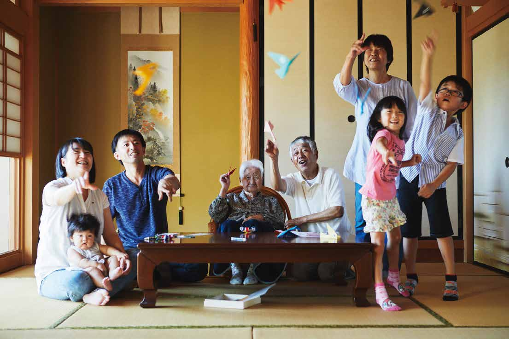
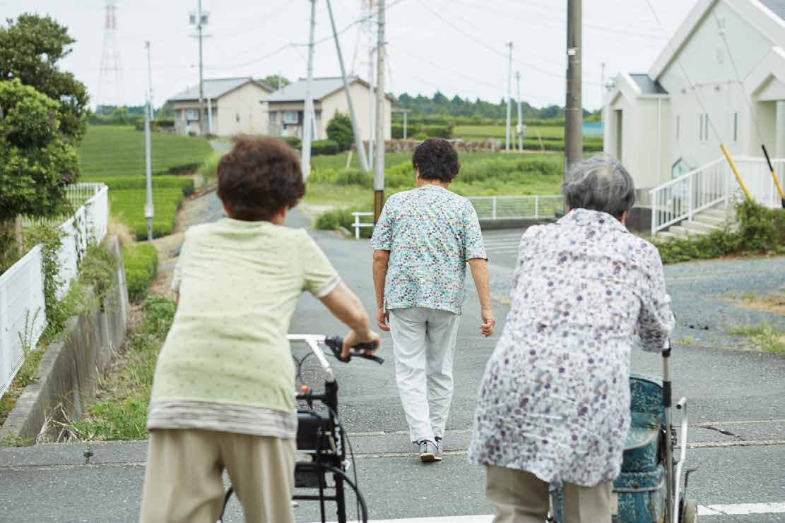
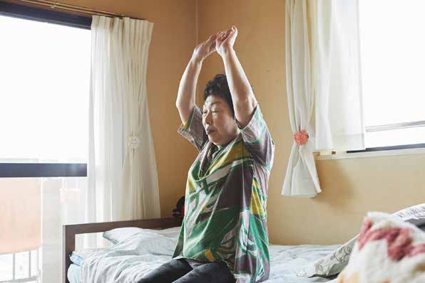
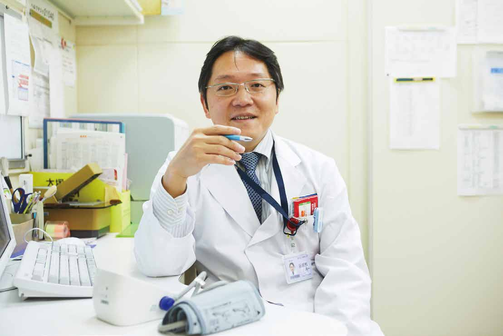
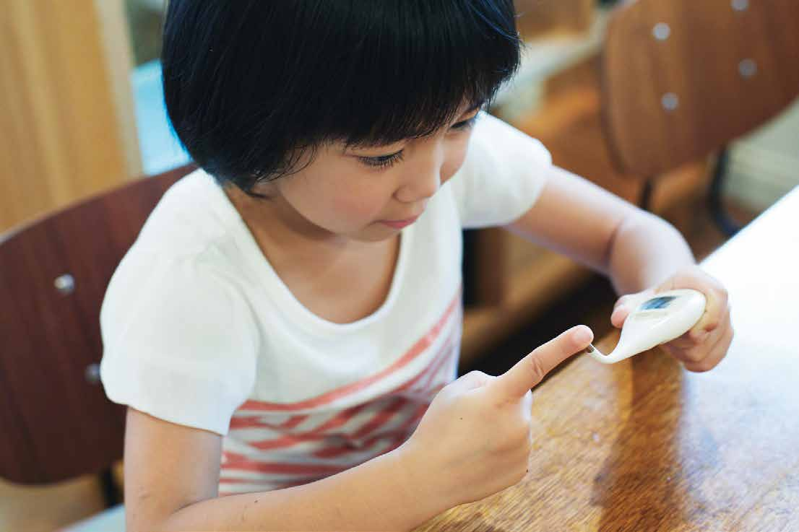

Not knowing the risk
may put you at risk.
Regular blood pressure monitoring matters — but hypertension rarely has visible symptoms, so most people don't feel the urgency. We get it: everyone wants to eat what they like and live on their own terms. Yet blood pressure shifts with your habits, and consistent readings reveal what a single visit to the doctor cannot. That's why we focus on monitors so effortless they become part of your routine, not an interruption to it.

Sleep like a baby. Take your temperature.
Children are masters of sleep — they run and play all day, then drift off effortlessly. Adults rarely have it so easy. Between work and obligations, restful sleep becomes something you have to earn. We analyze your daily activity and sleep patterns to help you find your way back to the kind of rest that actually restores.


Tipping the scales. Everything in its place.
On a cold morning, no one wants to step onto a freezing scale. We designed ours so your feet never feel the chill. A small detail — but small details are what turn a chore into a habit.

Set real goals. Quiet enough for life.
Children dislike nebulizers, partly because of the noise. So we made ours quiet enough for kids to focus on games and books instead — quiet enough that treatment time feels like any other moment in the day.
A whole family of conditions.
When a child has asthma, the whole family feels it. Twice-daily treatments and sudden attacks take a toll on everyone. Our nebulizers are easy to clean and simple enough for a child to operate — a small relief for parents managing a difficult routine.

Every movement counts. Brush your way.
As a child, movement was second nature. As an adult, it takes effort. An activity tracker makes the invisible visible — steps taken, energy spent — turning everyday movement into something you can actually see and build on.
Setting a goal is easy.
Taking the first step is hard.
The reasons to run are endless — fitness, stress relief, fresh air. But starting is always the hard part. Lacing up your shoes and strapping on a tracker can be just enough of a nudge to get you out the door. The first step is the only one that takes willpower.
Relief begins with a healing touch.
A parent's hand on a child's forehead is often enough to bring comfort. That simple, soothing gesture inspired the way our thermometers feel against the skin — designed to echo the gentleness of a caring touch.

A scale is more than a scale.
It's furniture, too.
Scales tend to end up hidden away — out of sight, out of mind. Ours is designed to look good enough to leave out, so it becomes part of your home and part of your daily routine.
I'm not in a bad mood.
I'm in pain.
Some days you can't stay home, even when your body says you should. For the fatigue and discomfort that don't show on the outside, our electrotherapy TENS devices offer quiet, steady relief — so you can get through the day on your own terms.

It's hard to see the future,
yet no one pictures one
without their health.
"I'll be fine." "It's probably nothing." We're remarkably good at dismissing our own health. But the simplest way to protect your future is to understand where you stand right now. Start with what you can measure today.

Making friends.
Sometimes all you need is a friend. That simple truth inspired the design of our attachable animal figures — small companions that watch over children and turn nebulizer time into something a little less daunting.
Grown-ups like praise too. It's my body.
A word of encouragement goes further than you'd think. That's why our activity trackers celebrate your progress — because everyone, not just children, does better when they feel recognized.

Energy of walking
connects us with
energy of living.
Walking is good for the body, but it's good for the mind too. Being outside leads to new discoveries, new encounters, new perspectives. We design tools that make it easier to keep moving — because every walk is an investment in how you feel.
Being held,
helps with healing.
Where do children feel safest? In their parent's arms. That's why our nebulizers work in any position — even lying down. When a child can receive treatment wherever they feel most at ease, the experience becomes a little less clinical and a lot more human.

Monday's blood pressure
doesn't lie.
There's a phenomenon called Monday Surge — stress spikes blood pressure at the start of the work week. After nearly fifty years of studying cardiovascular health worldwide, we know that good design isn't just about accuracy. It's about supporting the emotional reality of the people who rely on it.

Taking the world's temperature. The power of human touch.
A fever is unsettling enough — not being able to check your temperature makes it worse. We believe thermometers should be accessible to everyone, everywhere. And as we work toward that, the products themselves should feel reassuring the moment you pick them up.
He's not my heartthrob. Eat well, brush well.
You know the feeling — your blood pressure spikes the moment you walk into the doctor's office. It's so common it has a name: White Coat Hypertension. We design medical equipment that feels approachable, because healthcare works better when the tools don't add to the anxiety.

A comfortable thermometer
is a flexible one.
To a child, thermometers feel cold and rigid — something to endure. Ours bends gently against the skin, staying in place even when little ones squirm. A flexible tip is a small thing, but it makes daily readings calmer for everyone.
Weight management. Your teeth should last.
We've gotten good at managing our schedules, but managing our bodies? Not so much. The key is consistency: small, daily check-ins that reveal trends before they become problems. Our body composition monitors sync with your phone, turning a quick step on the scale into lasting insight.
Let's fight childhood obesity.
Sports and activity aren't enough on their own — when a child's diet is out of balance, the risk of obesity is real. In a world full of conflicting health advice, we believe in sharing clear, honest information that families can trust.

The different walks of life.
A walk is good. A daily walk is transformative — for your muscles, your heart, your blood pressure, your mind. Pair it with a tracker and the benefits become visible, reinforcing the habit. Because everyone deserves to feel in step with their own health.